Gravitation

“Gravity is a myth,
the Earth sucks”
Unknown
NEWTON’s
LAW
of
GRAVITATION
- All
objects feel a force of attraction to each other known as the
gravitational
force. The magnitude of
this force between two “point” particles of masses m1
and m2 separated by a distance r12 is
given by the equation below
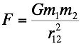
where G is the
gravitational constant whose value is measured experimentally as
6.6726 x 10-11 m3/kg.s2. G is believed to be a Universal
constant whose value is the same between any two point
objects at all time and all space.
 Do not confuse “G” and “g”. g (=9.8 m/s2) is the
value of the acceleration due to gravity at the earth’s
surface, it is not a universal
constant.
Do not confuse “G” and “g”. g (=9.8 m/s2) is the
value of the acceleration due to gravity at the earth’s
surface, it is not a universal
constant.
- For a uniform spherical body radius R,
the gravitational force on a “point” mass distance r from the
centre of the sphere can be calculated assuming all of the
mass of the sphere at a radius less than r is concentrated at
the centre of the sphere. In so
far as the earth is a uniform sphere, we may calculate the
gravitational force due to the earth as if the mass of the
earth were located at its centre.
- The earth is not exactly a sphere, it
bulges at the equator, nor is its density uniform. In addition, its rotation causes the
value of g to decrease slightly as one moves from the poles to
the equator. However, all of
these effects are less than 1% of the nominal value of 9.81
m/s2 at the earth’s surface.
- The
direction of the gravitational force is along the line joining
the two point masses. Each mass
is attracted to the other with equal but opposite forces
(given by the above equation) which comprise an
action/reaction pair of forces. Note
that this means that if an object on the earth’s surface feels
a gravitational force due to the earth, the earth feels an
equal but opposite force. The
acceleration of the object will be “g”, but the acceleration
of the earth will be undetectable because of the large mass of
the earth (a = F/m).
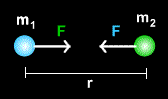
- The fact
that the value of G is so small means that the magnitude of
the gravitational force between “normal” objects is very
small. The first measurement of
the value of G was by Henry
Cavendish 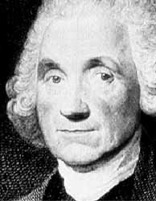 in 1798. Having
obtained the value of G, Cavendish was able to estimate the
mass of the earth, in fact he titled his paper “weighing
the earth”. In this case the force on
an object at the earth’s surface is given by,
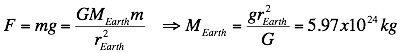
- Away
from the earth’s surface the acceleration due to gravity on an
object depends on its height, h, above the surface,
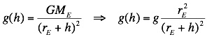
Note that
since the radius of the earth is so large (6.4 x 106
m), even at the top of Mount Everest the value of g is only 0.04
m/s2 less than that at sea level.
As we have
already seen an object is kept in uniform circular motion by a
centripetal force acting towards the centre of the circle. For satellites in circular orbits around
the earth the centripetal force is the force of gravity and we
may write
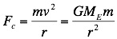
But, for circular motion the period, T, and velocity, v,
are related by
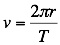
Combining
these two equations we obtain
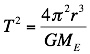
In other words
there is a direct relationship between the period and radius of
circular orbits. This is apparent
in the orbital motion of the planets around the Sun; as the
distance from the Sun increases the period also increases. This relationship is known as Kepler’s
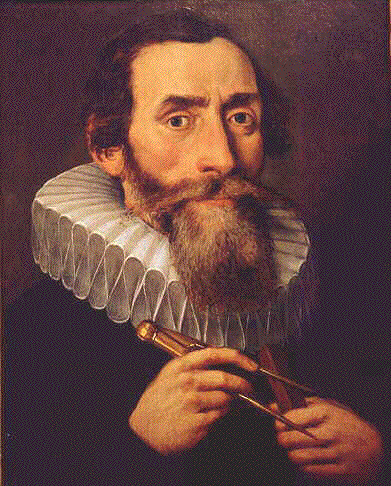third
law.
- Circular
orbits
are a special case of orbital motion which can be described by
simple application of Newton’s Laws. Elliptical,
parabolic
and hyperbolic orbits, much more common in nature, require
more complex analysis. It is
interesting to note that projectile trajectories are actually
elliptical orbits (see below).
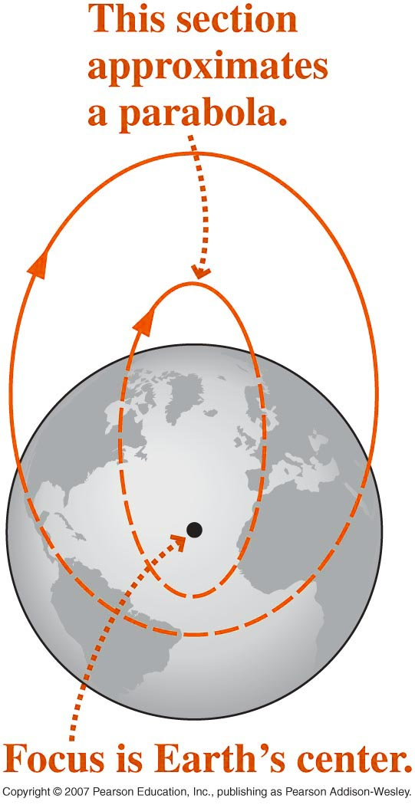
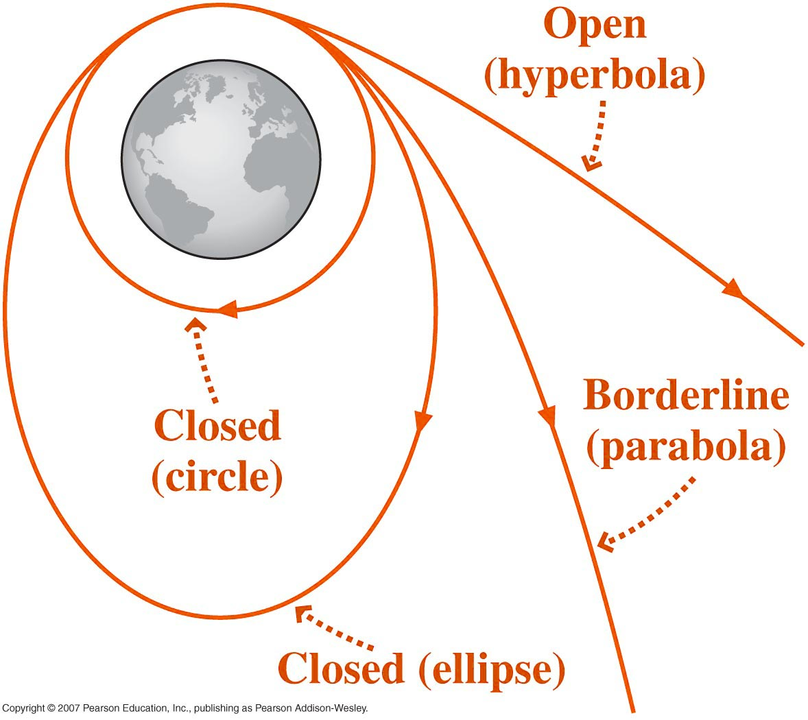
"Far too noisy, my dear Mozart, far too many
notes"
Archduke Ferdinand of Austria on Wolfgang Amadeus Mozart
Dr. C. L. Davis
Physics Department
University of Louisville
email: c.l.davis@louisville.edu